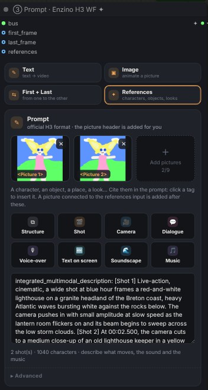

Text, a picture, two keyframes, an end frame or a set of references in. A video with native stereo sound out. Everything runs on ComfyUI's own MiniMax H3 implementation: no extra model code, no extra Python dependency.
Du texte, une image, deux images-clés, une image de fin ou des références en entrée. Une vidéo avec son stéréo natif en sortie. Tout tourne sur l'implémentation MiniMax H3 native de ComfyUI : aucun code de modèle en plus, aucune dépendance Python en plus.
The pack gives you three ways to drive the same engine. Quality, speed and memory handling are identical; pick the one you like to work with.
Le pack te donne trois façons de piloter le même moteur. Qualité, vitesse et gestion mémoire sont identiques : choisis celle avec laquelle tu aimes travailler.
Story, motion control, retouch, variationsHistoire, contrôle du mouvement, retouche, variations
—
—
✓ FULL
EditionÉdition
FULL
Free · Full
FULL
Best forIdéal pour
Getting a great clip fastUn beau clip, vite
A clear pipeline you can branchUne chaîne claire qu'on peut brancher
Full control, long storiesContrôle total, longues histoires
2Install & modelsInstallation & modèles
Copy the ComfyUI-Enzino-H3-Studio folder into ComfyUI/custom_nodes/. (Replace the Free folder if you upgrade to Full: never keep both.)
Copie le dossier ComfyUI-Enzino-H3-Studio dans ComfyUI/custom_nodes/. (Si tu passes de Free à Full, remplace le dossier : ne garde jamais les deux.)
Restart ComfyUI, then reload the page with Ctrl+F5.
Redémarre ComfyUI, puis recharge la page avec Ctrl+F5.
Open workflows/enzino_h3_wf.json (Full edition: also enzino_h3_simple.json and enzino_h3_studio.json), or double-click the canvas and type Enzino.
Ouvre workflows/enzino_h3_wf.json (édition Full : aussi enzino_h3_simple.json et enzino_h3_studio.json), ou double-clique sur le canevas et tape Enzino.
Open the ◆ Models card: every missing file can be downloaded from its list (⬇). Downloads resume if they are cut.
Ouvre la carte ◆ Modèles : chaque fichier manquant se télécharge depuis sa liste (⬇). Les téléchargements reprennent s'ils sont coupés.
Requires a recent ComfyUI with native MiniMax H3 support. Interface language: Settings → Enzino → H3 Studio → Language.
Nécessite un ComfyUI récent avec MiniMax H3 natif. Langue de l'interface : Paramètres → Enzino → H3 Studio → Language.
Model filesFichiers des modèles
FolderDossier
Recommended fileFichier conseillé
SizeTaille
models/diffusion_models
minimax_h3_fl2va_pruned_int8_convrot.safetensors Keyframes model (Text, Image, First + Last, End frame). On a 16 GB card the W6A8 version fits better.Modèle images-clés (Texte, Image, Début + Fin, Image de fin). Sur une carte 16 Go, la version W6A8 tient mieux.
21 GB · W6A8 16 GB
models/diffusion_models
minimax_h3_ref2va_pruned_int8_convrot.safetensors References model, optional. Or one Hybrid FL+REF file used for every mode.Modèle Références, optionnel. Ou un seul fichier Hybride FL+REF pour tous les modes.
21 GB
models/text_encoders
qwen3vl_32b_minimax_h3_nvfp4_awq.safetensors
15.7 GB
models/vae
minimax_h3_video_vae_int8_convrot.safetensors(or FP16 for finer detail)(ou FP16 pour plus de finesse) minimax_h3_audio_vae_fp32.safetensors
2.8 · 0.6 GB
models/loras
minimax_h3_fl2v_turbo_8step_v1.0_comfyui_bf16.safetensors Turbo LoRA, not needed with a model that is already Turbo.LoRA Turbo, inutile avec un modèle déjà Turbo.
2 GB
Optional, all in the ◆ Models card: the 10 official style embeddings, the sharp live-preview decoder taeh3 (23 MB), and for the Full edition the Fun ControlNet, RIFE / FILM and the Krea 2 files.
En option, tout dans la carte ◆ Modèles : les 10 styles officiels (embeddings), le décodeur d'aperçu net taeh3 (23 Mo), et pour l'édition Full le Fun ControlNet, RIFE / FILM et les fichiers Krea 2.
Your own files.Tes propres fichiers.Every file of the folder is selectable. H3 models are recognised by their content, whatever their name; they come first, then a ── other files ── separator and the rest of the folder. Added a file while ComfyUI runs? Press ↻ Rescan.Tous les fichiers du dossier sont sélectionnables. Les modèles H3 sont reconnus par leur contenu, quel que soit leur nom ; ils viennent d'abord, puis un séparateur ── autres fichiers ── et le reste du dossier. Fichier ajouté pendant que ComfyUI tourne ? Clique ↻ Actualiser.
Optional packsPacks optionnels
ComfyUI Nvidia VFX Nodes — enables NVIDIA RTX Video Super Resolution for the upscale.active NVIDIA RTX Video Super Resolution pour l'upscale.
ComfyUI-MiniMaxH3Modby Luisa — saved references (RefMods) in the Studio.de Luisa — références enregistrées (RefMods) dans le Studio.
SageAttentionSageAttention — pip install sageattentionin ComfyUI's Python: the biggest speed gain.dans le Python de ComfyUI : le plus gros gain de vitesse.
3Your first videoTa première vidéo
With the Simple node FULL, in five steps. In the Free edition, do the same in the WF: ③ Prompt for the picture, prompt and format, ④ Render for the speed.
Avec le node Simple FULL, en cinq étapes. En édition Free, fais pareil dans le WF : ③ Prompt pour l'image, le prompt et le format, ④ Render pour la vitesse.
Choose ▣ Image and drop a picture in the slot (or stay in ✎ Text).Choisis ▣ Image et glisse une image dans la case (ou reste en ✎ Texte).
Write what happens: who moves, how the camera moves, what we hear. Use the helper tiles if you are not sure of the H3 wording.Écris ce qui se passe : qui bouge, comment bouge la caméra, ce qu'on entend. Utilise les tuiles d'aide si tu n'es pas sûr de la formulation H3.
Pick a duration (5 s is a good start) and the quality ✦ HD · 1 MP (Turbo).Choisis une durée (5 s pour commencer) et la qualité ✦ HD · 1 MP (Turbo).
Press Run: the clip previews live while it renders.Clique Run : le clip s'affiche en direct pendant le calcul.
Happy with it? Keep the same seed and switch to ★ Max (Full) for the final.Ça te plaît ? Garde le même seed et passe en ★ Max (Full) pour le rendu final.
💡Image modes: describe what moves, not the picture. H3 already sees it.Modes image : décris ce qui bouge, pas l'image. H3 la voit déjà.
4ModesModes
ModeMode
What it doesCe qu'il fait
WhereOù
✎ TextTexte
Video and sound from the prompt alone.Vidéo et son à partir du prompt seul.
Simple · WF · Studio
▣ Image
Animates a picture: it becomes the first frame.Anime une image : elle devient la première image.
Simple · WF · Studio
⇆ First + LastDébut + Fin
Goes from one picture to the other over the clip.Passe d'une image à l'autre sur la durée du clip.
WF · Studio
⚑ End frameImage de fin
Lands on a picture at the end of the clip.Finit sur une image à la fin du clip.
Studio
✦ ReferencesRéférences
Up to 9 pictures (a character, an object, a place, a look) that you cite in the prompt as <Picture 1>, <Picture 2>… The Studio also takes a reference video and a reference audio.Jusqu'à 9 images (un perso, un objet, un lieu, un look) que tu cites dans le prompt avec <Picture 1>, <Picture 2>… Le Studio accepte aussi une vidéo et un audio de référence.
WF · Studio
References in practiceLes références en pratique
Needs a References model (REF2VA) or the Hybrid FL+REF file, picked in ◆ Models.Il faut un modèle Références (REF2VA) ou le fichier Hybride FL+REF, choisi dans ◆ Modèles.
Click a picture's tag to insert <Picture n> at the cursor. Numbers follow the order of the tiles.Clique l'étiquette d'une image pour insérer <Picture n> au curseur. La numérotation suit l'ordre des vignettes.
No picture header is added in this mode: you decide how each picture is used.Pas d'en-tête image dans ce mode : c'est toi qui dis comment chaque image est utilisée.
Reference picture size (Advanced): Match is fast, Max keeps a better likeness and is slower.Taille des images de référence (Avancé) : Adaptée est rapide, Max garde une meilleure ressemblance et est plus lent.
The WF ③ Prompt node has a references input: pictures connected there are added after the card's.Le node WF ③ Prompt a une entrée references : les images branchées là s'ajoutent après celles de la carte.
Studio only: a reference video (motion, edit, continuation; conformed to 24 fps, cut at 15 s) whose sound can become <Audio 1>, a reference audio (voice, music), and saved references from the RefMod pack.Studio seulement : une vidéo de référence (mouvement, montage, suite ; mise à 24 i/s, coupée à 15 s) dont le son peut devenir <Audio 1>, un audio de référence (voix, musique), et les références enregistrées du pack RefMod.
[Shot 1] Live-action, cinematic. <Picture 1> walks along the harbour at dusk
wearing the jacket from <Picture 2>. The camera tracks beside her.

References in the WF ③ Prompt card.Les références dans la carte ③ Prompt du WF.
Studio extrasLes bonus du Studio
Mid keyframeImage du milieu — a third picture placed anywhere in the clip (position slider), in Image / First + Last modes.une troisième image placée où tu veux dans le clip (curseur de position), en modes Image / Début + Fin.
♪ Your soundTon son — drop a voice, a dialogue or a music track and choose where it starts: H3 keeps your audio and builds the picture and the lip-sync around it. Describe the speaker in the prompt.glisse une voix, un dialogue ou une musique et choisis où elle commence : H3 garde ton audio et construit l'image et la synchro labiale autour. Décris la personne qui parle dans le prompt.
Connected sockets win over the slots: first_frame, last_frame, references, audio.Une entrée branchée passe avant la case : first_frame, last_frame, references, audio.
5Writing the promptÉcrire le prompt
H3 was trained on a structured prompt. The pack uses that official format and writes the fiddly parts for you.
H3 a été entraîné sur un prompt structuré. Le pack utilise ce format officiel et écrit pour toi les parties délicates.
integrated_multimodal_description: [Shot 1] Live-action, cinematic, a wide shot at blue hour
frames a lighthouse on a granite headland… The camera pushes in slowly as the lantern flickers on.
[Shot 2] At 00:02.500, the camera cuts to a medium close-up of the old keeper; the gruff,
low-voiced old man (S1) says: <d>[French] Elle tiendra encore cette nuit.</d>
overall_soundscape: howling wind, waves crashing on the rocks, rain on oilskin.
non_diegetic_music: low cello drone, slow, building.
Automatic picture headerEn-tête image automatique
In Image, First + Last and End frame modes, H3 needs a sentence telling it where each picture sits in time. It is added for you (shown with an AUTO badge above the prompt) with the right shot number and timing. Turn it off in Advanced if you write your own; a prompt that already starts with For the target video or How the reference pictures is left alone.
En modes Image, Début + Fin et Image de fin, H3 a besoin d'une phrase qui dit où se place chaque image dans le temps. Elle est ajoutée pour toi (badge AUTO au-dessus du prompt) avec le bon numéro de plan et le bon timing. Désactive-la dans Avancé si tu écris la tienne ; un prompt qui commence déjà par For the target video ou How the reference pictures n'est pas touché.
Prompt helpersAides au prompt
Small forms that write correct H3 sentences, with a live preview, inserted at the cursor.
De petits formulaires qui écrivent des phrases H3 correctes, avec un aperçu en direct, insérées au curseur.
⧉ Structure
Replaces the prompt with the empty three-part template.Remplace le prompt par le modèle vide en trois parties.
🎬 ShotPlan
A new [Shot n] with its start time, transition and framing. Numbers follow on.Un nouveau [Shot n] avec son heure de début, sa transition et son cadrage. La numérotation suit.
🎥 CameraCaméra
18 moves (push, pull, pan, orbit, crane, handheld…) with amplitude, speed and target. One clear move works best.18 mouvements (avancée, recul, panoramique, orbite, grue, caméra à l'épaule…) avec amplitude, vitesse et cible. Un seul mouvement clair, c'est le mieux.
💬 Dialogue
Who speaks (new voice or an existing S1/S2), age, voice, tone, pace, language and the exact words. Speakers are tracked for you.Qui parle (nouvelle voix ou S1/S2 existant), âge, voix, ton, débit, langue et texte exact. Les intervenants sont suivis pour toi.
A sign, a title, a caption… H3 writes it in the picture.Une enseigne, un titre, une légende… H3 l'écrit dans l'image.
🌊 SoundscapeAmbiance
Sets the overall_soundscape line.Remplit la ligne overall_soundscape.
🎵 MusicMusique
Sets the non_diegetic_music line (style, tempo, shape), or no background music.Remplit la ligne non_diegetic_music (style, tempo, évolution), ou pas de musique de fond.
💡Dialogue syntax: the gruff old man (S1) says: <d>[French] Texte exact.</d>. H3 speaks 11 languages and keeps the words exactly as written.Syntaxe du dialogue : the gruff old man (S1) says: <d>[French] Texte exact.</d>. H3 parle 11 langues et garde le texte tel quel.
Style
Advanced → Style applies one of the 10 official H3 effects (Bullet time, Dark magic, Four seasons, Spiral ascent, Truman show…). Needs the style embeddings, downloadable from ◆ Models.
Avancé → Style applique un des 10 effets H3 officiels (Bullet time, Dark magic, Four seasons, Spiral ascent, Truman show…). Nécessite les embeddings de style, à télécharger depuis ◆ Modèles.
6Format & durationFormat & durée
Size works by pixel budget, like the official H3 selector: every format gets the same number of pixels, rounded to multiples of 32. Auto takes the ratio of your picture (16:9 without picture).
La taille fonctionne par budget de pixels, comme le sélecteur officiel H3 : chaque format a le même nombre de pixels, arrondi au multiple de 32. Auto prend le ratio de ton image (16:9 sans image).
BudgetBudget
16:9
9:16
1:1
4:3
21:9
0.6 MP
1024×576
576×1024
768×768
864×672
1152×512
0.9 MP
1280×704
704×1280
960×960
1120×832
1440×640
1.0 MP ★
1344×768
768×1344
992×992
1152×864
1536×672
1.3 MP
1504×864
864×1504
1120×1120
—
—
1.5 MP
1632×928
928×1632
1216×1216
—
—
✎ Custom sets your own budget from 0.3 to 3 MP. 1 MP is H3's native size and the best quality. Above ~1 MP it is slower and beyond what H3 learned; past ~1.5 MP faces and motion can fall apart. Rendering at 1 MP and upscaling is usually cleaner.
✎ Perso règle ton propre budget de 0,3 à 3 MP. 1 MP est la taille native de H3 et la meilleure qualité. Au-delà de ~1 MP c'est plus lent et hors de ce que H3 a appris ; après ~1,5 MP visages et mouvement peuvent se dégrader. Rendre à 1 MP puis upscaler est en général plus propre.
DurationDurée
1 to 15 seconds at 24 fps. H3 uses a frame grid of 17k+5 frames, so the duration is rounded up to the next valid length: 3 s = 73 frames, 5 s = 124, 8 s = 192, 10 s = 243, 12 s = 294, 15 s = 362.
De 1 à 15 secondes à 24 i/s. H3 utilise une grille de 17k+5 images, donc la durée est arrondie à la longueur valide suivante : 3 s = 73 images, 5 s = 124, 8 s = 192, 10 s = 243, 12 s = 294, 15 s = 362.
7Render settingsRéglages de rendu
⚡ Turbo
Fast. Uses the Turbo LoRA (8 steps, or 4 with a 4-step LoRA). With a model that is already Turbo, set the Turbo LoRA to none: 4 steps if the model name contains 4step, else 8.Rapide. Utilise la LoRA Turbo (8 steps, ou 4 avec une LoRA 4 steps). Avec un modèle déjà Turbo, mets la LoRA Turbo sur aucune : 4 steps si le nom du modèle contient 4step, sinon 8.
✦ Full
Best quality: 13 steps with the step cache, 20 without.Meilleure qualité : 13 steps avec le cache des steps, 20 sans.
Steps
auto (0) picks the right count for the speed. Set a number to force it.auto (0) choisit le bon nombre selon la vitesse. Mets un nombre pour le forcer.
Seed 🎲 🔒
🎲 new random seed, 🔒 keep it between runs. Changing only the seed reuses the encoded prompt (fast).🎲 nouveau seed au hasard, 🔒 le garder entre deux rendus. Changer seulement le seed réutilise le prompt encodé (rapide).
Sampler · scheduler
Default res_multistep · simple. Leave them unless you know why.Par défaut res_multistep · simple. Laisse-les sauf si tu sais pourquoi.
Shift
Studio, Advanced: video / audio shift (12 / 3 by default when on).Studio, Avancé : shift vidéo / audio (12 / 3 par défaut quand activé).
Live previewAperçu en direct
The whole clip plays in the card while it renders. With taeh3 installed it is sharp.Tout le clip se joue dans la carte pendant le calcul. Avec taeh3 installé, il est net.
8Speed & memoryVitesse & mémoire
Everything is automatic. These settings are there when you want to tune.
Tout est automatique. Ces réglages sont là quand tu veux affiner.
Attention
auto takes the fastest installed: SageAttention → SageAttention 3 → Flash. If one fails it falls back to PyTorch by itself and remembers it.auto prend la plus rapide installée : SageAttention → SageAttention 3 → Flash. Si l'une plante, repli tout seul sur PyTorch, et c'est mémorisé.
Step cacheCache des steps
Native EasyCache: skips steps whose result barely changes (~4 of 13 in Full). auto = light in Full, off in Turbo. strong is faster, softer.EasyCache natif : saute les steps dont le résultat change à peine (~4 sur 13 en Full). auto = léger en Full, désactivé en Turbo. fort est plus rapide, plus doux.
Sparse attentionAttention sparse
Native H3 sparse attention. Faster on long clips; tau 1.3 is balanced, higher is faster.Attention sparse native de H3. Plus rapide sur les clips longs ; tau 1,3 est équilibré, plus haut est plus rapide.
Low VRAMFaible VRAM
Splits the feed-forward of each block: same result, ~4 GB less at peak. auto = on under 20 GB.Découpe le feed-forward de chaque bloc : même résultat, ~4 Go de moins au pic. auto = activé sous 20 Go.
Prompt cacheCache du prompt
Keeps the encoded prompt: a seed change skips the 32B text encoder.Garde le prompt encodé : changer le seed saute l'encodeur 32B.
Keep models loadedGarder les modèles chargés
Reuses the patched model between runs.Réutilise le modèle patché d'un rendu à l'autre.
Free text encoderLibérer l'encodeur
Unloads it right after use. Turn on when RAM is short.Le décharge juste après usage. À activer si la RAM manque.
Tiled decodeDécodage en tuiles
Decodes the video in tiles: less VRAM at the end of the render.Décode la vidéo par tuiles : moins de VRAM à la fin du rendu.
Weight precisionPrécision des poids
In ◆ Models, Advanced. Leave on default for INT8 / W6A8 files.Dans ◆ Modèles, Avancé. Laisse sur default pour les fichiers INT8 / W6A8.
Behind the scenes: the text encoder and the video model never sit in RAM together when RAM is short (no Windows paging), the encoded prompt is kept on the CPU, VRAM headroom is kept for the computation, and if the card runs out of memory the render retries once with more headroom.
En coulisses : l'encodeur de texte et le modèle vidéo ne restent jamais ensemble en RAM quand elle manque (pas de swap Windows), le prompt encodé est gardé côté CPU, une marge de VRAM est gardée pour le calcul, et si la carte manque de mémoire le rendu est relancé une fois avec plus de marge.
16 GBInstall SageAttention, use the W6A8 model, explore in ⚡ Draft, then render the final at 1 MP and upscale.Installe SageAttention, prends le modèle W6A8, explore en ⚡ Brouillon, puis rends le final à 1 MP et upscale.
9LoRAs
Add your MiniMax H3 LoRAs (characters, styles, motions) from the list; H3 LoRAs come first, the others below. Each one has a strength slider (−1 to 2) and an on/off switch. In the Studio, trigger words are one click away. Free: 3 LoRAs · Full: 8.
Ajoute tes LoRAs MiniMax H3 (persos, styles, mouvements) depuis la liste ; les LoRAs H3 viennent d'abord, les autres en dessous. Chacune a un curseur d'intensité (−1 à 2) et un interrupteur. Dans le Studio, les mots-clés sont à un clic. Free : 3 LoRAs · Full : 8.
The Turbo LoRA is not in this list: it is set in ◆ Models and used only in ⚡ Turbo.
La LoRA Turbo n'est pas dans cette liste : elle se règle dans ◆ Modèles et ne sert qu'en ⚡ Turbo.
10✦ Enzino H3 Simple FULL
Three columns: picture + prompt · clip, LoRAs and models · result. In portrait the columns stack. You choose the mode (Text / Image), duration (3, 5, 8, 10 s), format (Auto, 16:9, 9:16, 1:1), quality, seed, models and LoRAs. Speed and memory run on auto, tuned to the GPU of whoever runs it.
Trois colonnes : image + prompt · clip, LoRAs et modèles · résultat. En portrait, les colonnes s'empilent. Tu choisis le mode (Texte / Image), la durée (3, 5, 8, 10 s), le format (Auto, 16:9, 9:16, 1:1), la qualité, le seed, les modèles et les LoRAs. Vitesse et mémoire tournent en auto, adaptés à la carte de la personne qui l'utilise.
QualityQualité
⚡ FastRapide
0.6 MP · Turbo
✦ HD
1 MP · Turbo
★ Max
1 MP · Full
✎ CustomPerso
Your MP budget, Turbo or FullTon budget en MP, Turbo ou Full
Open workflows/enzino_h3_simple.json or add the node by hand.
Ouvre workflows/enzino_h3_simple.json ou ajoute le node à la main.
11✦ Enzino H3 WF
① Models→② LoRAs→③ Prompt→④ Render→⑤ Enhance→⑥ Output
Six nodes joined by one ✦ wire that carries the settings and the clip. Open workflows/enzino_h3_wf.json. The header has a ⚡ Draft / ✦ Final switch: Draft = 0.6 MP, Turbo, no enhancement; Final brings your settings back.
Six nodes reliés par un seul fil ✦ qui transporte les réglages et le clip. Ouvre workflows/enzino_h3_wf.json. L'en-tête a un bouton ⚡ Brouillon / ✦ Final : Brouillon = 0,6 MP, Turbo, sans amélioration ; Final remet tes réglages.
Node
What you setCe que tu règles
OutputsSorties
① Models
Video model, text encoder, video and audio VAE, Turbo LoRA, and optionally the References model and its Turbo LoRA. Download and rescan from the card.Modèle vidéo, encodeur de texte, VAE vidéo et audio, LoRA Turbo, et en option le modèle Références et sa LoRA Turbo. Téléchargement et actualisation depuis la carte.
✦
② LoRAs
Your LoRA stack.Ta pile de LoRAs.
✦
③ Prompt
Mode (Text, Image, First + Last, References), pictures, prompt with helpers, style, duration, format, size. Inputs first_frame, last_frame, references.Mode (Texte, Image, Début + Fin, Références), images, prompt avec aides, style, durée, format, taille. Entrées first_frame, last_frame, references.
✦
④ Render
Turbo / Full, seed, steps, and in Advanced every speed and memory setting. Shows the raw clip, live.Turbo / Full, seed, steps, et dans Avancé tous les réglages vitesse et mémoire. Affiche le clip brut, en direct.
✦ · frames · audio
⑤ Enhance
Three tabs: Krea 2 second pass FULL · Upscale (1080p, 1440p, 4K FULL) · Fps 48 / 72 FULL. Shows the enhanced clip.Trois onglets : Krea 2 2e passe FULL · Upscale (1080p, 1440p, 4K FULL) · Fps 48 / 72 FULL. Affiche le clip amélioré.
✦ · frames
⑥ Output
Save on/off, file name and folder, signature and social formats FULL, player, history.Enregistrer oui/non, nom et dossier, signature et formats réseaux FULL, lecteur, historique.
video · frames · audio
💡⑤ Enhance is optional: wire ④ Render straight into ⑥ Output. You can also plug your own nodes on the frames / audio outputs.⑤ Enhance est optionnel : branche ④ Render directement sur ⑥ Output. Tu peux aussi brancher tes propres nodes sur les sorties frames / audio.
12✦ Enzino H3 Studio FULL
One landscape node in three columns: create (mode, pictures, references, prompt) · settings in tabs · result. The header holds the mode, ⚡ Draft / ✦ Final, presets, the layout switch (▣ Studio, ▥ Columns, ▤ Tall) and the height (↕ S, M, L by default, XL).
Un node en paysage sur trois colonnes : créer (mode, images, références, prompt) · réglages en onglets · résultat. L'en-tête contient le mode, ⚡ Brouillon / ✦ Final, les presets, la disposition (▣ Studio, ▥ Colonnes, ▤ Haute) et la hauteur (↕ S, M, L par défaut, XL).
TabOnglet
InsideContenu
⚙ Speed · modelsVitesse · modèles
Speed profile, attention, step cache, low VRAM and the rest of Speed & memory; the ◆ Models card. A GPU tip appears when a lighter model would fit your card better.Profil de vitesse, attention, cache des steps, faible VRAM et le reste de Vitesse & mémoire ; la carte ◆ Modèles. Un conseil apparaît quand un modèle plus léger irait mieux à ta carte.
◷ Clip
Duration, format and size, upscale, render (Turbo / Full, seed, steps).Durée, format et taille, upscale, rendu (Turbo / Full, seed, steps).
◈ LoRAs · soundLoRAs · son
LoRA stack and ♪ Your sound.Pile de LoRAs et ♪ Ton son.
☰ Story · motionHistoire · mouvementFULL
Story mode, motion control and retouch.Mode histoire, contrôle du mouvement et retouche.
Player with sound, size, length and fps.Lecteur avec le son, taille, durée et i/s.
↪Continue from the last frame: the last image becomes the first of a new clip.Continuer depuis la dernière image : elle devient la première d'un nouveau clip.
Reuse seed · Restore all settings of that render · Retouch this FULL.Reprendre le seed · Restaurer tous les réglages de ce rendu · Retoucher ce clip FULL.
History of recent renders, with a Clear button.Historique des rendus récents, avec un bouton Vider.
If a render fails, the error shows in the node with Copy the error and Reset every setting.Si un rendu échoue, l'erreur s'affiche dans le node avec Copier l'erreur et Réinitialiser tous les réglages.
13Krea 2 second pass2e passe Krea 2FULL
Every frame is re-detailed by Krea 2 at a low denoise, with the same noise on every frame so the detail holds still.
Chaque image est redétaillée par Krea 2 à faible denoise, avec le même bruit sur toutes les images pour que le détail reste stable.
Krea 2 may changeKrea 2 peut changer
Fine detail only (default): only skin, hair and fabric texture is taken from Krea 2; colours, faces, shapes and motion stay H3's. Whole image: Krea 2 repaints more, risk of flicker.Détail fin seul (par défaut) : seule la texture (peau, cheveux, tissus) vient de Krea 2 ; couleurs, visages, formes et mouvement restent ceux de H3. Image entière : Krea 2 repeint davantage, risque de scintillement.
Denoise
0.15 by default. 0.10–0.20 keeps the clip; above 0.3 it starts to change.0,15 par défaut. 0,10–0,20 garde le clip ; au-delà de 0,3 il commence à changer.
Steps
4, 6 or 8. 4 is right for Flash / distilled models.4, 6 ou 8. 4 convient aux modèles Flash / distillés.
Anti-flickerAnti-scintillement
A temporal filter smooths the added detail across frames. Keep it on.Un filtre temporel lisse le détail ajouté d'une image à l'autre. Garde-le activé.
Model · text encoder · VAEModèle · encodeur · VAE
Krea 2 model (IntoRealism Krea 2 Flash works great), Qwen3-VL 4B text encoder, Qwen-Image VAE. All downloadable from ◆ Models.Modèle Krea 2 (IntoRealism Krea 2 Flash marche très bien), encodeur Qwen3-VL 4B, VAE Qwen-Image. Tout se télécharge depuis ◆ Modèles.
Prompt
Optional: a short description of the look (e.g. sharp skin texture, film grain).Optionnel : une courte description du rendu (ex. sharp skin texture, film grain).
Soft faces far away?Visages lointains flous ?Render at 1 MP (or 1.3–1.5 MP custom), in ✦ Full, with the FP16 video VAE and a closer framing in the prompt; the Krea 2 pass adds texture on top.Rends à 1 MP (ou 1,3–1,5 MP en perso), en ✦ Full, avec le VAE vidéo FP16 et un cadrage plus serré dans le prompt ; la passe Krea 2 ajoute la texture par-dessus.
Story mode (Studio) chains up to 12 shots into one long video. Each shot has its own prompt and duration and starts on the last frame of the previous one; the sound is crossfaded between shots. The first shot uses the main prompt and mode.
Le mode histoire (Studio) enchaîne jusqu'à 12 plans en une longue vidéo. Chaque plan a son prompt et sa durée et démarre sur la dernière image du précédent ; le son est fondu entre les plans. Le premier plan utilise le prompt et le mode principaux.
Variations (Studio) renders 2 to 4 seeds in one run. Pick the best one, then press ✦ Final from it.
Variations (Studio) rend 2 à 4 seeds en un lancement. Choisis la meilleure, puis clique ✦ Final depuis celle-ci.
15Motion control & retouchContrôle du mouvement & retoucheFULL
Motion controlContrôle du mouvement
A pose or depth video drives the motion through the native H3 Fun ControlNet. Choose as is (the video is already a pose / depth map) or canny (edges are extracted for you), the strength and when the control stops (end, 0.1–1). Not available in References mode.
Une vidéo de pose ou de profondeur guide le mouvement via le Fun ControlNet H3 natif. Choisis tel quel (la vidéo est déjà une pose / profondeur) ou canny (les contours sont extraits pour toi), l'intensité et le moment où le contrôle s'arrête (fin, 0,1–1). Indisponible en mode Références.
RetouchRetouche
Regenerates a box of a video over a time range and keeps the rest. Drop the video (or press ↪ Retouch this on a render), draw the box, set start and end, describe the new content in the prompt. The original sound can be kept.
Régénère une zone d'une vidéo sur une plage de temps et garde le reste. Glisse la vidéo (ou clique ↪ Retoucher sur un rendu), dessine la zone, règle début et fin, décris le nouveau contenu dans le prompt. Le son d'origine peut être gardé.
16Finish & shareFinition & partage
Upscale
1080p · 1440p · 4K FULL, frame by frame, with NVIDIA RTX Video Super Resolution (very fast, made for video) when the Nvidia VFX pack is installed, any upscale model of models/upscale_models (4x-UltraSharp…), or lanczos.1080p · 1440p · 4K FULL, image par image, avec NVIDIA RTX Video Super Resolution (très rapide, fait pour la vidéo) quand le pack Nvidia VFX est installé, n'importe quel modèle de models/upscale_models (4x-UltraSharp…), ou lanczos.
Frame rateImages / sFULL
48 or 72 fps with RIFE or FILM. Smooth motion, longer render.48 ou 72 i/s avec RIFE ou FILM. Mouvement fluide, rendu plus long.
Signature FULL
Your name on the video: text, position, size and opacity.Ton nom sur la vidéo : texte, position, taille et opacité.
Social formatsFormats réseauxFULL
Extra MP4 files in Reels 9:16, Feed 1:1, Portrait 4:5, YouTube 16:9, cropped from the clean picture and framed on the action (focus slider), then signed.Des MP4 en plus en Reels 9:16, Feed 1:1, Portrait 4:5, YouTube 16:9, recadrés depuis l'image propre et cadrés sur l'action (curseur de cadrage), puis signés.
17Presets & Draft / FinalPresets & Brouillon / Final
⚡ Draft / ✦ Final: Draft switches to a quick setting to explore (Studio: 576p, Turbo, 4 variations, no upscale · WF: 0.6 MP, Turbo, no enhancement). Final brings your own settings back exactly.
⚡ Brouillon / ✦ Final : Brouillon passe sur un réglage rapide pour explorer (Studio : 576p, Turbo, 4 variations, sans upscale · WF : 0,6 MP, Turbo, sans amélioration). Final remet exactement tes réglages.
Save your own from the presets menu: they keep the clip settings, not the prompt or the pictures.
Enregistre les tiens depuis le menu des presets : ils gardent les réglages du clip, pas le prompt ni les images.
18Saving & historyEnregistrement & historique
With Save on, each render writes to output/<folder>/<name>_00001_.mp4 (H.264 video + AAC stereo, with the workflow embedded so you can drop the MP4 back into ComfyUI), plus the first frame (_first.webp) and the last frame (_last.png). Default folder MiniMax_H3. Turn Save off to only preview.
Avec Enregistrer activé, chaque rendu écrit output/<dossier>/<nom>_00001_.mp4 (vidéo H.264 + AAC stéréo, avec le workflow intégré : tu peux reglisser le MP4 dans ComfyUI), plus la première image (_first.webp) et la dernière (_last.png). Dossier par défaut MiniMax_H3. Désactive Enregistrer pour seulement prévisualiser.
The history (Studio result column, WF ⑥ Output) lists your recent renders across sessions. Clear empties the list only: the video files stay on disk. It is stored in user/default/enzino_h3_studio/.
L'historique (colonne résultat du Studio, WF ⑥ Output) liste tes rendus récents d'une session à l'autre. Vider vide seulement la liste : les fichiers vidéo restent sur le disque. Il est stocké dans user/default/enzino_h3_studio/.
19TroubleshootingDépannage
SymptomSymptôme
What to doQue faire
A node has a red frame / "missing model"Un node a un cadre rouge / « modèle manquant »
The workflow was made on another computer. Pick your file in ◆ Models (or download it); the frame goes away by itself.Le workflow vient d'un autre ordinateur. Choisis ton fichier dans ◆ Modèles (ou télécharge-le) ; le cadre disparaît tout seul.
My model is not in the listMon modèle n'est pas dans la liste
Check the folder, then ↻ Rescan. Files with another name are under ── other files ──.Vérifie le dossier, puis ↻ Actualiser. Les fichiers au nom différent sont sous ── autres fichiers ──.
The 2nd render is very slow to startLe 2e rendu est très lent à démarrer
RAM is short and Windows is paging. Turn on Free text encoder, close other apps, or use the W6A8 model.La RAM manque et Windows swappe. Active Libérer l'encodeur, ferme les autres applis, ou prends le modèle W6A8.
Out of memoryMémoire insuffisante (OOM)
The render already retried once with more headroom. Lower the size or duration, set Low VRAM to on, turn on Tiled decode, or use the 🧪 Low VRAM preset.Le rendu a déjà été relancé une fois avec plus de marge. Baisse la taille ou la durée, mets Faible VRAM sur on, active le décodage en tuiles, ou prends le preset 🧪 Low VRAM.
"CUDA illegal memory access"« CUDA illegal memory access »
The GPU is in a broken state: restart ComfyUI. If it comes back, set Attention to default.La carte est dans un état cassé : redémarre ComfyUI. Si ça revient, mets l'attention sur default.
Turbo is blurry / wrong with a Turbo modelTurbo flou / raté avec un modèle Turbo
Set the Turbo LoRA to none: the model is already distilled.Mets la LoRA Turbo sur aucune : le modèle est déjà distillé.
References mode errorErreur en mode Références
Pick a References model (REF2VA or Hybrid) in ◆ Models and add at least one picture.Choisis un modèle Références (REF2VA ou Hybride) dans ◆ Modèles et ajoute au moins une image.
Krea 2 pass flickersLa passe Krea 2 scintille
Use Fine detail only, keep anti-flicker on, lower the denoise to 0.10–0.15.Prends Détail fin seul, garde l'anti-scintillement, baisse le denoise à 0,10–0,15.
The interface did not updateL'interface ne s'est pas mise à jour
Reload the page with Ctrl+F5 after updating the pack.Recharge la page avec Ctrl+F5 après une mise à jour du pack.
Still stuck? In the Studio, press Copy the error and send it with your GPU, VRAM, RAM and ComfyUI version.
Toujours bloqué ? Dans le Studio, clique Copier l'erreur et envoie-la avec ta carte, ta VRAM, ta RAM et ta version de ComfyUI.
20Free / Full
Free
Full
✦ Enzino H3 WF
✓
✓
✦ Enzino H3 Simple · ✦ Enzino H3 Studio
🔒
✓
Text, Image, First + Last, References · full qualityTexte, Image, Début + Fin, Références · qualité maximale
✓
✓
End frame, mid keyframe, your own sound (Studio)Image de fin, image du milieu, ton propre son (Studio)
—
✓
Speed & memory workTravail vitesse & mémoire
✓
✓
Prompt helpers, live preview, historyAides au prompt, aperçu en direct, historique
✓
✓
Upscale
1080p · 1440p
+ 4K
LoRAs
3
8
Krea 2 second pass2e passe Krea 2
—
✓
Story mode, motion control, retouch, variationsMode histoire, contrôle du mouvement, retouche, variations
The Free edition is the complete ✦ Enzino H3 WF. A WF workflow made with the Full edition still runs in Free: Full-only steps are skipped with a message. A Studio or Simple node opened in Free shows a 🔒 card with a link instead of a red node. Get the Full edition ($11.99) on Ko-Fi.
L'édition Free est le ✦ Enzino H3 WF complet. Un workflow WF fait avec l'édition Full tourne quand même en Free : les étapes réservées au Full sont sautées avec un message. Un node Studio ou Simple ouvert en Free affiche une carte 🔒 avec un lien au lieu d'un node rouge. L'édition Full (11,99 $) est sur Ko-Fi.
21Licences & creditsLicences & crédits
MiniMax H3 weights are under the MiniMax H3 Community License; community models and LoRAs (Hybrid FL+REF, Turbo LoRA, Krea 2, IntoRealism…) have their own licences. Read them before commercial use of your videos.
Les poids MiniMax H3 sont sous MiniMax H3 Community License ; les modèles et LoRAs communautaires (Hybride FL+REF, LoRA Turbo, Krea 2, IntoRealism…) ont leurs propres licences. Lis-les avant un usage commercial de tes vidéos.
MiniMax H3 and the native ComfyUI implementation by their authors.MiniMax H3 et l'implémentation ComfyUI native par leurs auteurs.
Speed ideas from PlagueKind's optimised workflow.Idées de vitesse tirées du workflow optimisé de PlagueKind.
RefMod: ComfyUI-MiniMaxH3Mod by Luisade Luisa.
Interface font: Inter (SIL Open Font License).Police de l'interface : Inter (SIL Open Font License).